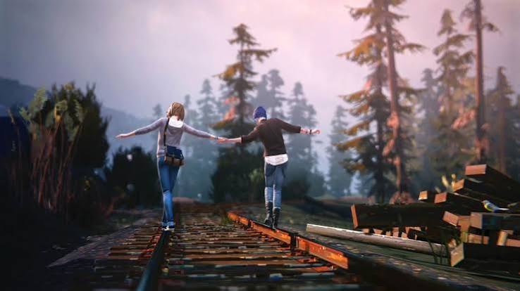
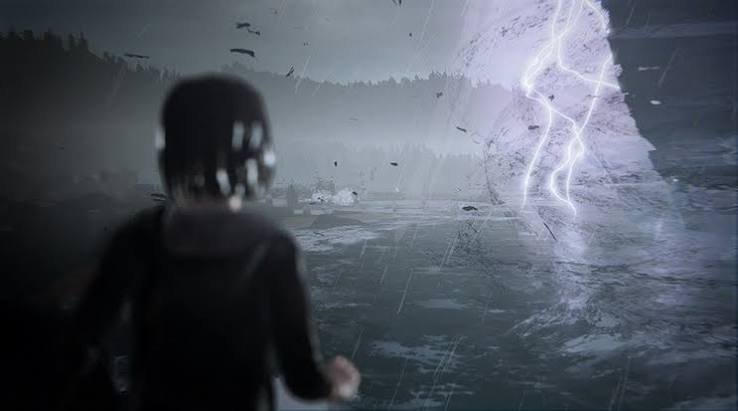

SALAS • LIFE IS STRANGE
LIFE IS STRANGE
Algumas escolhas mudam tudo.
E se você pudesse voltar atrás?
Life is Strange acompanha Max Caulfield, uma estudante que descobre ter a capacidade de voltar no tempo. O que começa como uma habilidade aparentemente extraordinária logo se transforma em uma responsabilidade.
Cada decisão pode alterar acontecimentos, relações e até o caminho da própria história.

Toda escolha deixa uma marca.
O jogo coloca o jogador diante de situações em que não existe necessariamente uma resposta perfeita. Escolher uma opção significa abrir mão de outra, e algumas consequências só aparecem muito tempo depois.

Pessoas também fazem parte das escolhas.
As relações entre os personagens são uma parte importante da experiência. Conversas, atitudes e decisões podem aproximar ou afastar pessoas, fazendo com que o jogador perceba como pequenas ações podem ter grandes efeitos.
Se pudesse voltar, você faria diferente?
Life is Strange também pode levar a uma reflexão sobre arrependimento, responsabilidade e as consequências das escolhas. Na vida real, diferente do jogo, não existe um botão para voltar no tempo.
Nem sempre existe uma escolha certa.
Algumas decisões são difíceis justamente porque todas as alternativas possuem consequências. Talvez a experiência mais interessante seja perceber que escolher também significa aceitar aquilo que não podemos controlar.